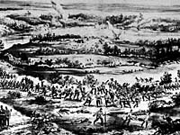
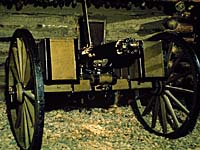
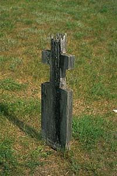
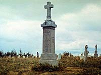

Community of Batoche
Village of Batoche
Northwest Rebellion
Battle of Batoche
Gabriel Dumont
| The Battle of Batoche | |||
| The Battle of Batoche was fought over four days, from May 9 to May 12, 1885. Less than 300 Metis and Indians led by Louis Riel and Gabriel Dumont defended Batoche, using a series of rifle pits which they had dug along the edge of the bush surrounding the village. | |||
 The North-West Field Force, commanded by Major General Frederick Middleton and numbering 800, attacked the defenses directly as well as embarking on maneuvers intended to distract the Metis and Indians away from the North West Field Force's numerical source of strength. On the first day of fighting, Major General Middleton had planned to attack the Metis and Indians on two fronts. The steamer Northcote, fortified by sandbags and staffed by militiamen was to proceed down river while Middleton would lead the remainder of his men by land. The strategy failed when the Metis lowered a ferry cable which decapitated the smokestacks of the Northcote, leaving it to float harmlessly downstream. The land forces also ran into significant resistance from the Metis who effectively held their positions. When the Field Force withdrew into their zareba, the Indians and Metis harassed them with gunfire until daybreak. The Metis and Indians believed they had won a victory on this first day of fighting. The next two days changed little. | |||
 The North-West Field Force bombarded the Metis positions with their four nine-pounders and harassed the riflemen with their rapidfire Gatling gun. In defending their position throughout the first three days, the Metis and Indians seriously depleted their supply of ammunition. | |||
 May 12 was the decisive day of the battle. It began when Middleton, equipped with one nine-pounder, the Gatling Gun and 130 men began to advance on the Metis rifle pits. This feinting action was intended to draw the Metis out of their rifle pits around the church to the north where the Gatling gun was positioned. On hearing the guns to the north, Lieutenant Colonel Van Straubenzie was to open fire and move against the defense lines around the church. Due to the strong wind, however, Van Straubenzie was unable to hear Middleton's guns open fire and he failed to coordinate his attack with Middleton's action. Middleton withdrew to his camp furious that the coordinated attack had not come off. Unknown to Middleton, his manoeuver had served its purpose - the Metis had in fact been drawn to the north anticipating a major offensive there. As Middleton sat down to lunch minutes later the Midlanders, under Lieutenant Colonel Williams, broke through the weakened Metis lines near the church. | |||
 The battle was over in minutes as the Field Force swept down the slopes to Batoche, past rifle pits where by now the Metis were firing nails and stones from their rifles. Riel and Dumont escaped. Riel gave himself up later but Dumont fled to the United States. Those who had not dispersed were captured and held for later trial in the courts. Over 25 dead from both sides were counted when the battle ended. |